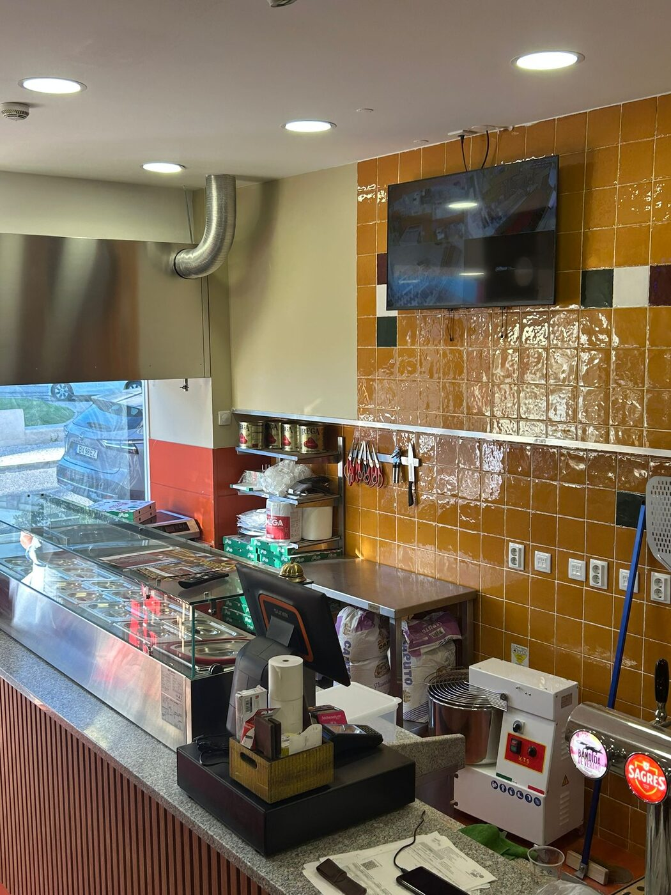

Domus quer dizer casa. E é assim que tratamos quem se senta à nossa mesa em Vila Franca de Xira.
Casa Bonita
Na Bella Domus Pizzaria, acreditamos que uma boa pizza é muito mais do que uma refeição — é um momento para partilhar, celebrar e criar memórias.
Inspirados na tradição italiana, reunimos ingredientes cuidadosamente selecionados, massa preparada diariamente e receitas simples que valorizam o verdadeiro sabor da cozinha mediterrânica. Cada pizza é confecionada no momento, com dedicação e respeito pela autenticidade que torna a gastronomia italiana tão especial.
O nome Bella Domus, que significa "Casa Bonita", representa exatamente aquilo que queremos proporcionar: um espaço onde todos se sintam em casa, rodeados de boa comida, bom ambiente e excelente companhia.

Além das nossas pizzas artesanais, oferecemos calzones, massas, lasanha, saladas frescas e sobremesas caseiras, sempre preparados com o mesmo cuidado e paixão. Seja para um jantar em família, um encontro entre amigos ou uma refeição rápida, queremos que cada visita seja uma experiência memorável.
Bem-vindo à Bella Domus. Onde cada fatia conta uma história e cada cliente faz parte da nossa família.
O que nos guia todos os dias
Ingredientes simples
Tomate, azeite, farinha, ovos. Sem atalhos — só o essencial, feito bem.
Forno sempre quente
Cada pizza é cozinhada no nosso forno Italforni, como manda a tradição.
Hospitalidade genuína
Cada mesa é tratada como se estivesse em nossa casa — porque está.